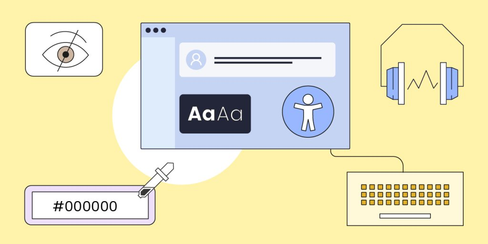

Mejore su desarrollo web
Conozca los términos más importantes para crear páginas web.
Conozca los términos más importantes para crear páginas web.
La usabilidad web se refiere a la facilidad con la que los usuarios pueden navegar y utilizar un sitio web. Una web usable permite a los usuarios encontrar la información que buscan de manera rápida y sencilla.

La usabilidad es crucial porque impacta directamente en la satisfacción del usuario. Un sitio web difícil de usar puede llevar a la frustración y a la pérdida de usuarios.
Ejemplo: Utilizar un lenguaje sencillo y directo, como "Haga clic aquí para más información" en lugar de "Para obtener información adicional, haga clic en este enlace.
Ejemplo: Usar el mismo estilo de botones y colores para todas las acciones principales, como "Enviar" y "Cancelar," en todas las páginas del sitio.

Ejemplo: Incluir descripciones alternativas (alt text) en todas las imágenes para que los usuarios que utilizan lectores de pantalla puedan entender el contenido visual.
La accesibilidad web es una característica de las páginas web y de los productos digitales, que logra que las personas con algún tipo de discapacidad o con analfabetismo se muevan por sus interfaces encontrando mínimas dificultades.
Conseguir integrar en el mundo digital a todas aquellas personas que encuentran dificultades en internet nos acerca a un mundo más igualitario.
Ejemplo: Incluir descripciones alternativas para imágenes.
Ejemplo: Permitir la navegación y la interacción solo con el teclado.
Ejemplo: Utilizar etiquetas claras y descriptivas en formularios.
Es una metodología que se enfoca en el usuario y sus necesidades durante todo el proceso de diseño. Esto significa que se tiene en cuenta la experiencia del usuario en cada paso del diseño, desde la conceptualización hasta la implementación.

Determina qué aspectos del producto se van a probar, la información que se desea obtener y cómo se usará para mejorar el diseño.
Permite que los usuarios utilicen el producto de forma natural, recoge comentarios sin influir en sus decisiones, y utiliza métodos como tests de usuario, entrevistas y encuestas.
Diseña escenarios que reflejen situaciones cotidianas de uso para obtener comentarios valiosos sobre la funcionalidad y usabilidad.
Analiza los resultados, identifica áreas de mejora y toma medidas para corregirlas antes del lanzamiento.
Facilita la creación de productos más fáciles de usar, mejorando la experiencia del usuario.
Crea soluciones más adaptables y pertinentes a las cambiantes necesidades de los usuarios.
Identifica problemas desde el principio, reduciendo errores y costos de corrección en etapas posteriores.
Valida conceptos y funcionalidades antes de su implementación completa, reduciendo riesgos de desarrollos no deseados.
Su plataforma permite a los usuarios filtrar y buscar alojamientos según sus preferencias específicas.
El sitio web de Marshall es atractivo, sencillo de utilizar y muy completo respecto a las necesidades de los clientes.
Utiliza algoritmos sofisticados para proporcionar resultados de búsqueda relevantes y útiles para cada consulta de los usuarios.